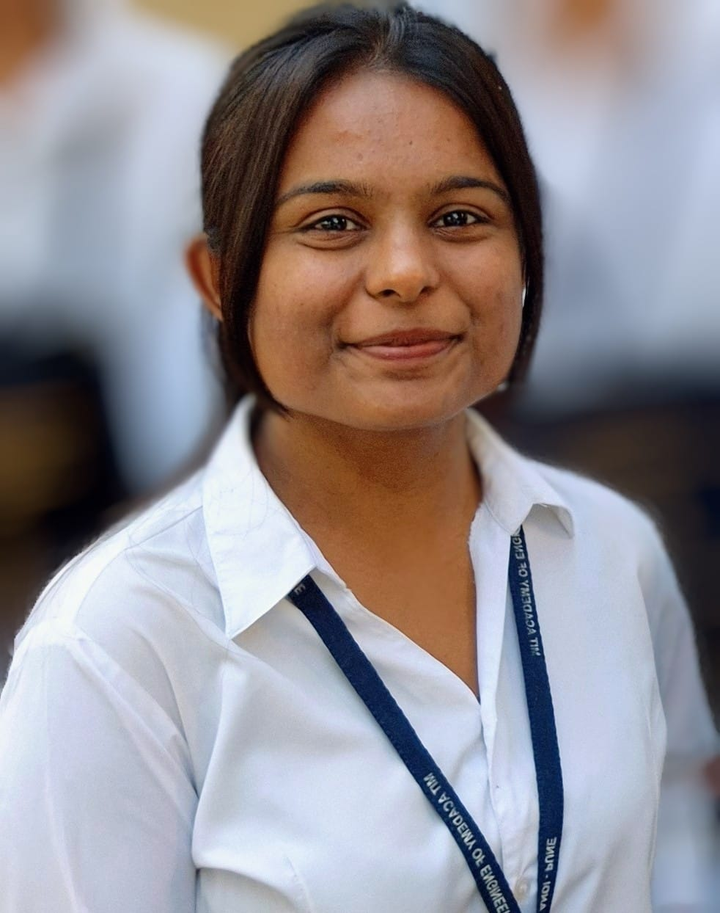

B.Tech - Civil Engineering
Phone: +91-8623910549
Email: varsha.puri@mitaoe.ac.in
Location: Pune, Maharashtra, India - 412105
Languages: English, Marathi, Hindi
As a motivated civil engineering student, I am enthusiastic about engaging in the field. With a solid foundation in core engineering principles and a passion for infrastructure development, I am dedicated to enhancing my skills and contributing to innovative solutions in the civil engineering industry.
ETABS, Revit Architecture, Civil Engineering, Project Planning, Project Design, Project Management